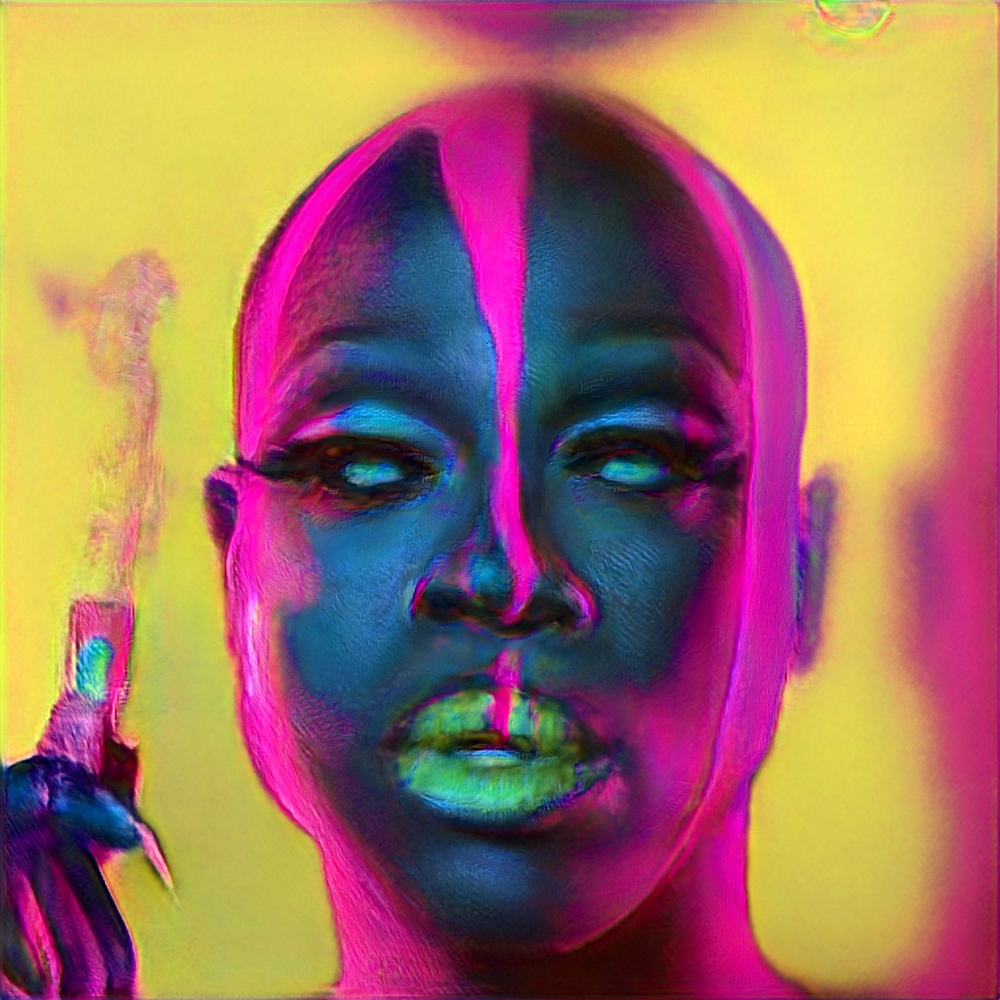
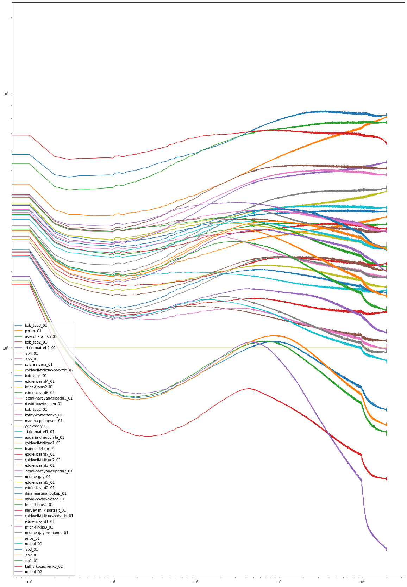
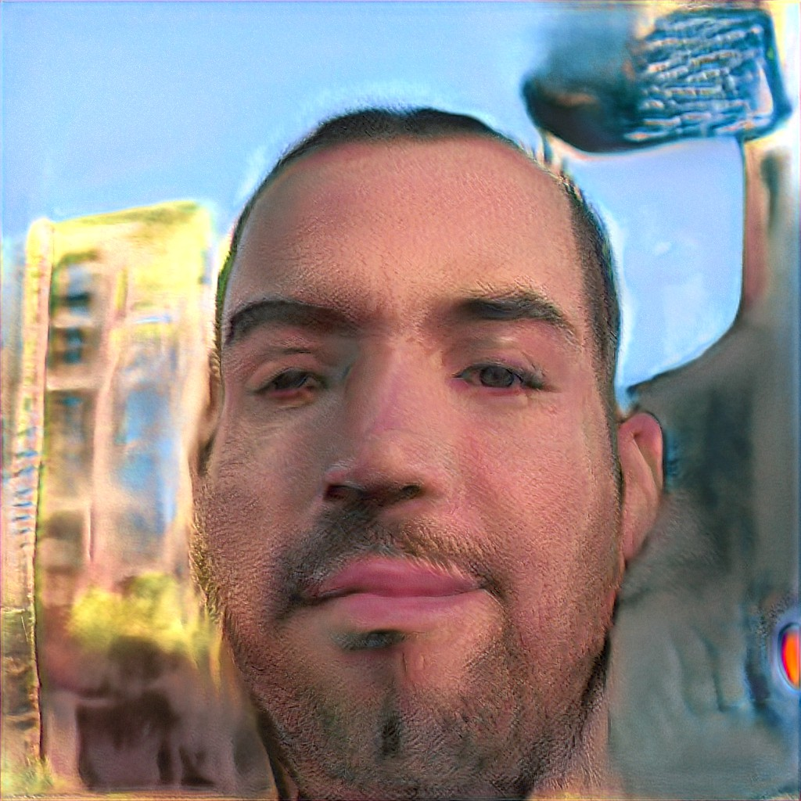

# Queering StyleGAN, Queering AI ## Systems Analysis from the Art Studio ### Lee Butterman, Queer in AI @ NeurIPS, 2019 hi@leebutterman.com<br>github.com/lsb<br>twitter.com/leebutterman<br>(he/him) <br><br> ### StyleGAN (+ ecosystem) is flexible enough to support drag queen makeovers out of the box ### ≤ 2 ° of separation to homophobic structures ### Leverage points afford many paths for change --- # StyleGAN * GAN architecture, based on style transfer * Unsupervisedly learns to separate disentangled high-level attributes * 18 levels of increasingly fine features * 512 features/level * if trained on faces: pose, identity, eyes * High-quality interpolation * Highly accessible code (Github), training data (Flickr Faces High Quality), pre-trained model (1 week/8 Volta GPUs) * Powers <u>thispersondoesnotexist.com</u> Coarse features from 3 faces,<br>fine features from 5 other faces:<br><img src="./stylegan-teaser.jpg" width="85%"> --- # Flickr Faces High Quality * 70000 faces from Flickr, permissive licenses, 1024⨉1024 RGB * Images aligned and cropped with dlib * Pruned with "various automatic filters" and then Mechanical Turk, to remove statues, paintings, photos of photos * Acknowledges bias of photos * uploaded to Flickr, permissive licenses, dlib facial detection thinks it is a face * "contains considerable variation in terms of age, ethnicity and image background" * "good coverage of accessories such as eyeglasses, sunglasses, hats, etc." Seven sample images from the dataset:<br> --- # StyleGAN Encoder * First encoder: github.com/Puzer/stylegan-encoder * future work: try others! * Register/crop faces in input (with dlib) * Encode reference image and intermediate generated images with pre-trained VGG16, into a high-level feature space * Loss = difference in VGG16 feature space * Stochastic Gradient Descent * Start with all 18x512 features set to 0: plausible average of 70k faces re: age, background focus/content, skin tone, facial expression, butch/femme presentation, lighting and paint (ambient diffuse, minimal paint; vs face 6 with green paint, underlighting, dark background), number of extra limbs (zero hands in frame): <img src="./stylegan-zero-face.jpg" width="30%"> --- # Adversarial Gift Bows * Queer culture includes people of many sizes and many levels of adornment * gritty ball culture of _Paris is Burning_ * slick commercialism of _Drag Race_ * Face registration+cropping is inexact * excludes hair, outfits, even people * Very camp & on-brand Dina Martina press photo: high production values, asymmetric lipstick, underexposed hair, overexposed décolletage, industrial-holiday-cheer gift bows, head-tinsel, dress-tinsel, horror vacui photo composition, large DoF: *does not register as having a face*. Ezra Miller's Met Gala 2019 seven-eyed-face: *registers*. <img src="./dina-martina-adversarial-gift-bows-adversarial-poinsettia-fascinator.jpg" width="50.3176%"><img src="./aligned-ezra-seven-eyes.jpg" width="48.6823%"> --- # Dataset of queer faces * For testing, training, calibrations, and more * github.com/lsb/queer-faces (PRs welcome!) * Encoded with 10k iterations, vs default 1k <div style="font-size: 8pt">aquaria-dragcon-la asia-ohara-fish bianca-del-rio bob_tdq1 bob_tdq2 bob_tdq3 bob_tdq4 / brian-firkus1 brian-firkus2 brian-firkus3 caldwell-tidicue1 caldwell-tidicue2 caldwell-tidicue-bob-tdq_01 caldwell-tidicue-bob-tdq_02 / david-bowie-closed david-bowie-open dina-martina-lookup eddie-izzard1 eddie-izzard2 eddie-izzard3 eddie-izzard4 / eddie-izzard5 eddie-izzard6 eddie-izzard7 harvey-milk-portrait kathy-kozachenko kathy-kozachenko laxmi-narayan-tripathi1 / laxmi-narayan-tripathi2 lsb1 lsb2 lsb3 lsb4 lsb5 marsha-p-johnson / porter roxane-gay roxane-gay-no-hands rupaul_01 rupaul_02 sylvia-rivera trixie-mattel1 / trixie-mattel-2 yvie-oddly zeros</div> <img src='asia-ohara-fish_01_29.jpg' width=14%> <img src='brian-firkus1_01_29.jpg' width=14%><img src='brian-firkus3_01_29.jpg' width=14%><img src='caldwell-tidicue1_01_29.jpg' width=14%><img src='caldwell-tidicue2_01_29.jpg' width=14%><img src='caldwell-tidicue-bob-tdq_01_29.jpg' width=14%><img src='caldwell-tidicue-bob-tdq_02_29.jpg' width=14%> <img src='david-bowie-closed_01_29.jpg' width=14%><img src='dina-martina-lookup_01_29.jpg' width=14%><img src='eddie-izzard1_01_29.jpg' width=14%><img src='eddie-izzard3_01_29.jpg' width=14%><img src='eddie-izzard4_01_29.jpg' width=14%> <img src='eddie-izzard5_01_29.jpg' width=14%><img src='eddie-izzard7_01_29.jpg' width=14%><img src='kathy-kozachenko_01_29.jpg' width=14%><img src='laxmi-narayan-tripathi1_01_29.jpg' width=14%> <img src='lsb1_01_29.jpg' width=14%><img src='lsb4_01_29.jpg' width=14%><img src='marsha-p-johnson_01_29.jpg' width=14%><img src='porter_01_29.jpg' width=14%> <img src='roxane-gay_01_29.jpg' width=14%><img src='roxane-gay-no-hands_01_29.jpg' width=14%><img src='rupaul_01_29.jpg' width=14%><img src='sylvia-rivera_01_29.jpg' width=14%><img src='trixie-mattel1_01_29.jpg' width=14%><img src='trixie-mattel-2_01_29.jpg' width=14%> <img src='yvie-oddly_01_29.jpg' width=14%><img src='zeros_01_29.jpg' width=14%> <!-- (w/ duplicates, registration errors) --> <!-- <img src="lsb5_01.jpg" width="14%"><img src="lsb5_01.jpg" width="14%"><img src="lsb5_01.jpg" width="14%"><img src="lsb5_01.jpg" width="14%"><img src="lsb5_01.jpg" width="14%"><img src="lsb5_01.jpg" width="14%"><img src="lsb5_01.jpg" width="14%"><br> <img src="lsb5_01.jpg" width="14%"><img src="lsb5_01.jpg" width="14%"><img src="lsb5_01.jpg" width="14%"><img src="lsb5_01.jpg" width="14%"><img src="lsb5_01.jpg" width="14%"><img src="lsb5_01.jpg" width="14%"><img src="lsb5_01.jpg" width="14%"><br> <img src="lsb5_01.jpg" width="14%"><img src="lsb5_01.jpg" width="14%"><img src="lsb5_01.jpg" width="14%"><img src="lsb5_01.jpg" width="14%"><img src="lsb5_01.jpg" width="14%"><img src="lsb5_01.jpg" width="14%"><img src="lsb5_01.jpg" width="14%"><br> <img src="lsb5_01.jpg" width="14%"><img src="lsb5_01.jpg" width="14%"><img src="lsb5_01.jpg" width="14%"><img src="lsb5_01.jpg" width="14%"><img src="lsb5_01.jpg" width="14%"><img src="lsb5_01.jpg" width="14%"><img src="lsb5_01.jpg" width="14%"><br> <img src="lsb5_01.jpg" width="14%"><img src="lsb5_01.jpg" width="14%"><img src="lsb5_01.jpg" width="14%"><img src="lsb5_01.jpg" width="14%"><img src="lsb5_01.jpg" width="14%"><img src="lsb5_01.jpg" width="14%"><img src="lsb5_01.jpg" width="14%"><br> <img src="lsb5_01.jpg" width="14%"><img src="lsb5_01.jpg" width="14%"><img src="lsb5_01.jpg" width="14%"><img src="lsb5_01.jpg" width="14%"><img src="lsb5_01.jpg" width="14%"><img src="lsb5_01.jpg" width="14%"><img src="lsb5_01.jpg" width="14%"><br> <img src="lsb5_01.jpg" width="14%"><img src="lsb5_01.jpg" width="14%"><img src="lsb5_01.jpg" width="14%"><img src="lsb5_01.jpg" width="14%"><img src="lsb5_01.jpg" width="14%"><img src="lsb5_01.jpg" width="14%"><img src="lsb5_01.jpg" width="14%"> --> --- # Δloss/Δt, per 0-face loss:  --- # Encoding results * Δloss / Δt ∝ conformity to training data * useful for self-assessment of genderqueer performance * or of gender-normative performance (misusable!) * FLOPS, non-conformity: expensive * Lowest 2 losses: false + face registrations * _lsb1_ meant to be more neutral than _2_ or _3_ * _lsb1_, _4_, _5_ meant to be neutral * _4_, _5_: difficult background * Tough to model Billy Porter's Sun God look, and Bob the Drag Quen's blue wig / hoop earrings / snarl * Hands on a face can come from the background, and not any humanoid body part: see _roxane-gay_01_ * The smoking water pistol in _bob-tdq2_01_ seems to take the place of an earring --- # Selected encodings ℯ-speedup shows morphing, source/dest: <img src='lsb1_01_29.jpg' width=14%><br> <img src='lsb5_01_5.jpg' width=14%><br> <img src='porter_01_29.jpg' width=14%><br> <img src='bob_tdq2_01_20.jpg' width=14%><br> <br> <img src='bob_tdq4_01_10.jpg' width=14%><img src='bob_tdq4_01_15.jpg' width=14%><br> <img src='roxane-gay_01_5.jpg' width=14%><img src='roxane-gay_01_29.jpg' width=14%><br> <img src='trixie-mattel-2_01_29.jpg' width=14%><br> --- # Vector-space manipulations * StyleGAN advertises high-quality interpolation: ✓ * Puzer/stylegan-encoder: 3 directions * "age" (youth) * "gender" (butchness) * "smile" * Performer in drag / out of drag? * makeup tutorials are big business! * many drag queens teach, encourage this * requires realistic encodings * requires continuity through latent space * +makeover direction implies -makeover! * negative direction less intuitive * The first two Trixie makeovers lose the crisp lines, most of the jewelry, keep the yellow, red, brown palette (which inverts to a purple-green sci-fi chic: silvery spotlight and chartreuse accents, or C3PO-zinc-knockoff robot fantasy) * The last two Bob makeovers are less obvious, less of an entire reworking of the face as with Trixie --- # ± makeovers <div style="margin-bottom:0.1em"><img src="lsb5_01.jpg" width="14%"> ± 0.67 ( <img src="trixie-mattel-2_01.jpg" width="14%"> - <img src="brian-firkus3_01.jpg" width="14%"> ) ≈ </div> <img src="lsb5-plus-trixie-minus-brian_10.jpg" width="14%"> <hr> <div style="margin-bottom:0.1em"><img src="lsb1_01.jpg" width="14%"> ± 0.5 ( <img src="trixie-mattel-2_01.jpg" width="14%"> - <img src="brian-firkus3_01.jpg" width="14%"> ) ≈ </div> <img src="lsb1-plus-trixie-minus-brian_20.jpg" width="14%"> <hr> <div style="margin-bottom:0.1em"><img src="lsb5_01.jpg" width="14%"> ± 0.33 ( <img src="bob_tdq2_01.jpg" width="14%"> - ) ≟ </div> <hr> <div style="margin-bottom:0.1em"><img src="lsb5_01.jpg" width="14%"> ± 0.33 ( - ) ≟ </div> <img src="lsb5-plus-bob4-minus-caldwell1_30.jpg" width="14%"><img src="lsb5-plus-bob4-minus-caldwell1_40.jpg" width="14%"> --- # Large-scale impact * Significant effort (curating datasets, actually running the SGD, tweaking hyperparameters, renaming homophobically inaccurate ±`gender.npy`, et cetera) * ImageNet uses WordNet 3.0 synsets, and Wordnet is widely noticed to include racist, sexist, ableist, and homophobic slurs * MBROLA has had only "male" or "female" voices for twenty years, as does Google Cloud TTS's 180 voices * California state id more gender-diverse! * Increased rate of research in AI * homophobia whack-a-mole ineffective * analyze the field as a system Caveat: municipalities in which people perform AI are not uniformly stable/supportive, radically opened borders are valuable and out-of-scope --- # Meadows' 12 Leverage Points <ol reversed start=12 end=6> <li>Constants, parameters (taxes/subsidies)<br>Tweak hyperparameters</li> <li>Buffer sizes<br>Re-build StyleGAN facial models, stylegan-encoder notebooks with more inclusive training data</li> <li>Structure of material stocks/flows (transport network, pop age distribution)<br>Use diverse datasets, hire diverse ppl</li> <li>Delay per rate of change<br>Run continuous integration benchmarks of queer testing data to assess inclusion</li> <li>Slow - feedback loops<br>File PRs to add inclusion</li> <li>Slow + feedback loops<br>File PRs to fix bugs and add features in inclusive projects, but not to the exclusion or abandonment of other projects</li> <li>Structure of information flow<br>Raise awareness of issues of inclusion</li> </ol> --- # Meadows' 12 Leverage Points <ol reversed> <li>System rules (incentives, punishments)<br>Invite people with expertise in AI and queer issues into a workshop tied to a prestigious AI conference, amplify voices</li> <li>Evolve/self-organize system structure<br>Establish a culture of open data, reproducible results, oversight</li> <li>Goal of the system<br>Change the goal of AI to be more inclusive and ethical</li> <li>Mindset/paradigm of the system<br>Repeatedly challenge anomalies/failures of foundational assumptions <i>(neural processing? with widespread use of human benchmarks? are humans the best yardstick?)</i></li> <li>Power to transcend paradigms<br>Teach people to code, lower cost of compute, help decentralize advancement of queer liberation</li> </ol> --- # Current leverage points <p>11. github.com/lsb/stylegan-encoder</p> <p>7. `trixie-mattel.npy`, `bob-tdq.npy`</p> <p>6. (see earlier slides)</p> <p>5. (shout out to the organizers of this event)</p> <p>4. Embodied in StyleGAN's widely available dataset and prebuilt models and paper and code, and StyleGAN Encoder's inclusion of Jupyter notebook and scripts</p> <p>3. Ethics pledges</p> <p>1. Rise of AI courses, decrease of cost of compute, rise of Jupyter/Colab to expand availability of GPU-powered work environments</p> leebutterman.com/queering-ai --- class: tinylist # References 1. Bob the Drag Queen. (2018) Makeup tutorial: `https://www.youtube.com/watch?v=BXVhC4hVY8A` 1. Carbonell, J. (2019) Our AI Ethics Pledge at Akamedy.ai and Saturdays.ai. `https://medium.com/saturdays-ai/our-ai-ethics-pledge-at-akademy-ai-8a320e68bfd7` 1. CarlGustav, et al. (2013) Get tagged by a racist AI for free and fun. `https://forums.somethingawful.com/showthread.php?threadid=3884409` 1. Future of Life Institute. (2018) Lethal Autonomous Weapons Pledge. `https://futureoflife.org/lethal-autonomous-weapons-pledge/` 1. Google AI. (2018) AI at Google: Our Principles. `https://ai.google/principles` 1. Google Cloud Text to Speech. (2019) Supported voices and languages. `https://cloud.google.com/text-to-speech/docs/voices` 1. Imagenet. (2016) API Documentation. `http://image-net.org/download-API` 1. Karras, T., Laine, S. and Aila, T. (2018) A Style-Based Generator Architecture for Generative Adverarial Networks. `http://stylegan.xyz/paper` 1. Kyle, J. (2018) Add text to MIT License banning ICE collaborators. `https://github.com/lerna/lerna/pull/1616` 1. Leonard, Z. (1992) I want a president. `http://www.lttr.org/journal/5/i-want-a-president` 1. Livingston, J. (1990) Paris is Burning. United States: Off White Productions. 1. Martina, D. (2019) Photos. `https://dinamartina.com/photos/` 1. Mattel, Trixie. (2016-2019) Makeup tutorials: `https://www.youtube.com/watch?v=nZTcKxCqgSU`, `https://www.youtube.com/watch?v=yFi-rZ4WJdw`, `https://www.youtube.com/watch?v=MzaEd7JtjO8`, `https://www.youtube.com/watch?v=4MXwE7HXGDU`, `https://www.youtube.com/watch?v=KOhamgj62jQ`, `https://www.youtube.com/watch?v=aik0vuQs9Qs`. 1. Meadows, D. (1999) Leverage Points: Places to Intervene in a System. Hartland, VT: Sustainability Institute. `http://donellameadows.org/wp-content/userfiles/Leverage_Points.pdf` 1. MBROLA. (2019) MBROLA-voices. `https://github.com/mbrola/MBROLA-voices` 1. Mufson, B. (2016) Why "I Want a Dyke for President" is more relevant than ever. `https://www.vice.com/en_us/article/78ey59/i-want-a-dyke-for-president-high-line` 1. Nikitko, D. (2019) StyleGAN Encoder. `https://github.com/Puzer/stylegan-encoder` 1. Princeton University. (2010) About Wordnet. `https://wordnet.princeton.edu/` 1. RuPaul, et al. (2009-present) Ru Paul's Drag Race. United States: World of Wonder. 1. Schoeller, M. (2019) The Most Powerful Drag Queens in America. `https://www.vulture.com/2019/06/most-powerful-drag-queens-in-america-ranked.html` 1. State of California Deptartment of Motor Vehicles. (2019) Gender Identity (Female, Male, or Nonbinary). `https://www.dmv.ca.gov/portal/dmv/detail/dl/gender_id` 1. van Kemenade, P. (2019) ML x GLAM. `https://slides.com/phivk/mplusai#/15` 1. Wang, P. This Person Does Not Exist. `https://thispersondoesnotexist.com`